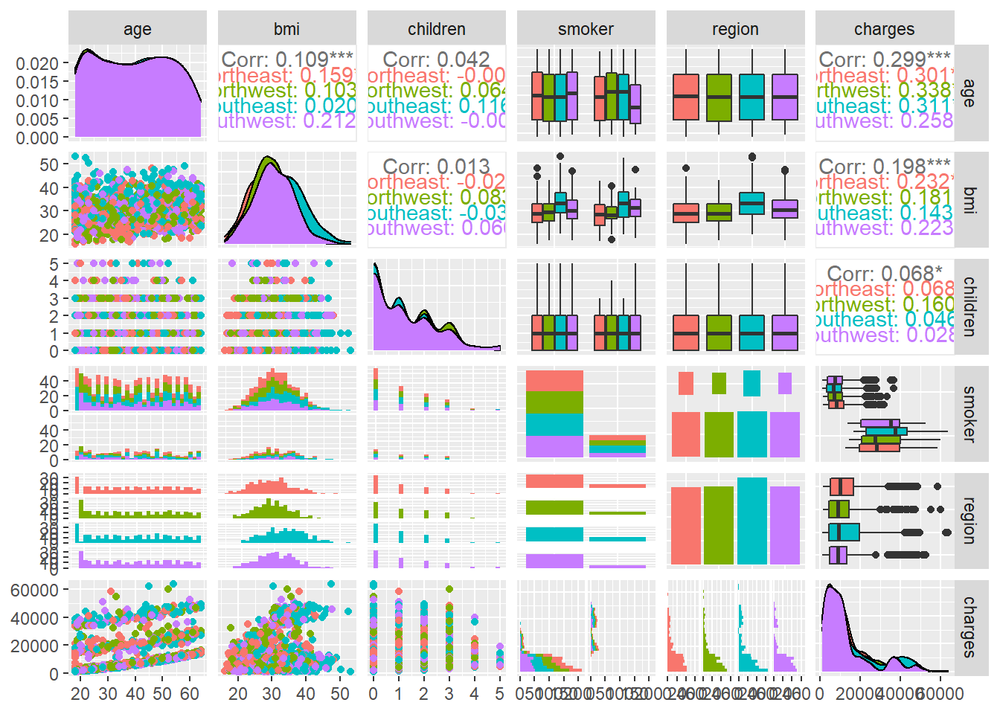
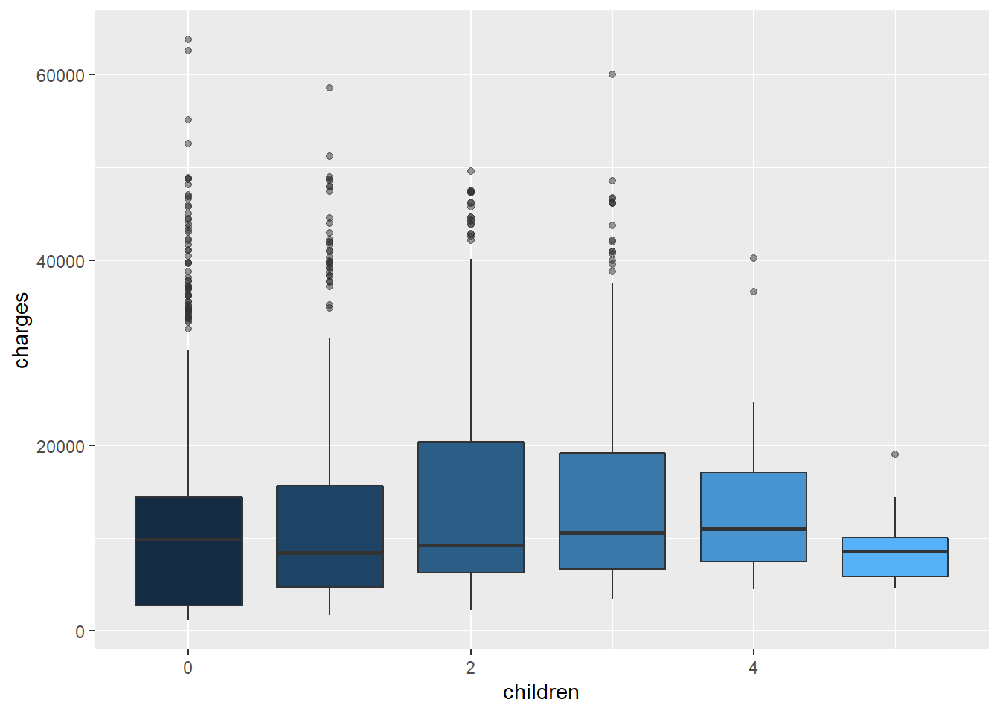
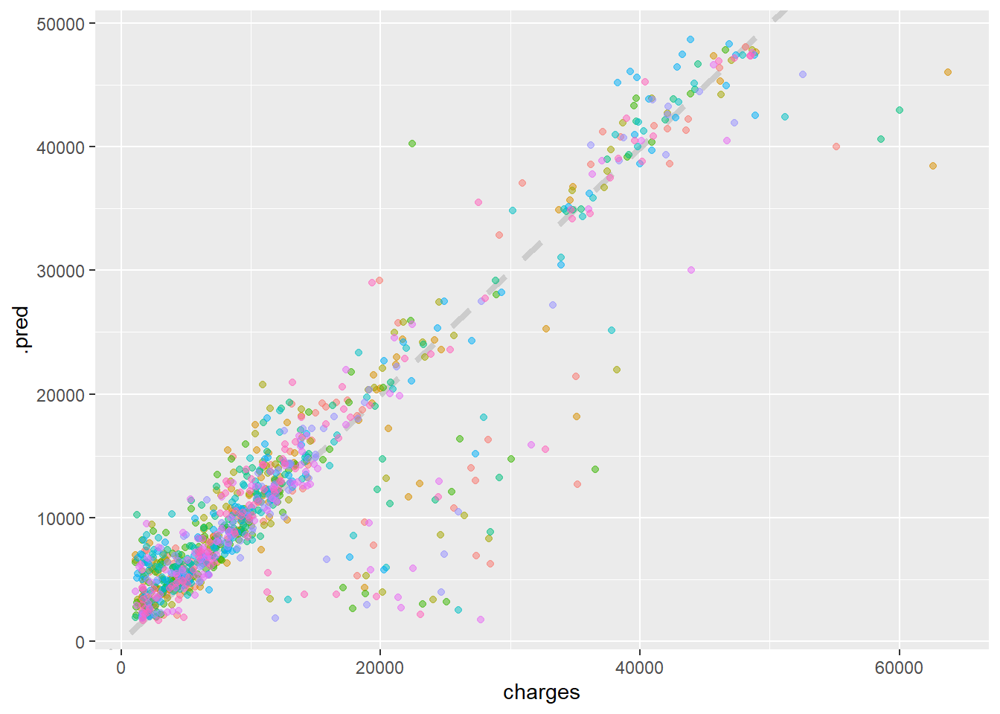
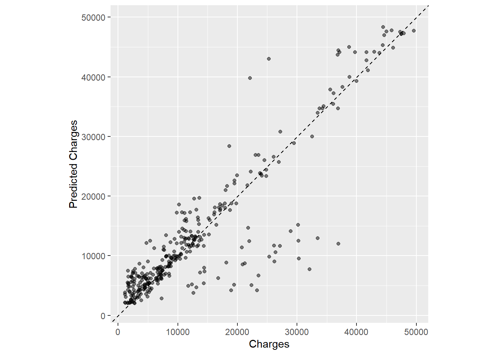
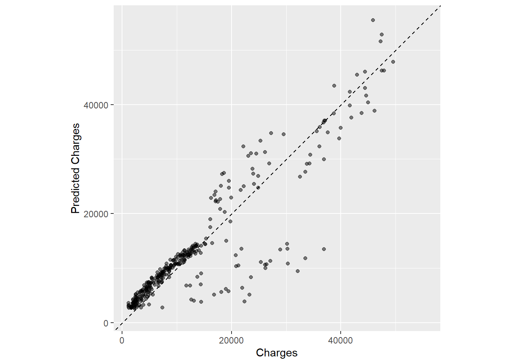
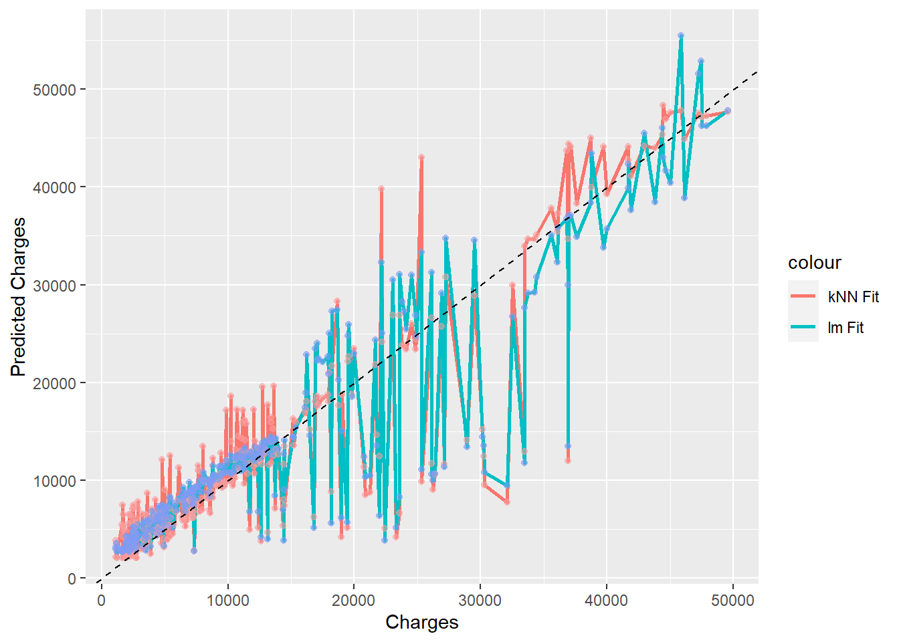

Dit is de blog die Arta Seyedan op 14 februari 2021 voor R-bloggers schreef over het voorspellen van verzekeringskosten en die ik wat bewerkt en vertaald heb.
analyse
Author
Arta Seyadan, bewerking Harrie Jonkman
Published
July 18, 2021
Inleiding
Verzekeringskosten voorspellen met behulp van lineaire regressie
Rond eind oktober 2020 woonde AS de Open Data Science Conferentie bij, voornamelijk voor de workshops en trainingssessies die daar werden aangeboden. De eerste workshop die hij bijwoonde was een demonstratie door Jared Lander over hoe je machine learning methoden in R kunt implementeren met behulp van een nieuw pakket genaamd tidymodels. Hij ging die training in en wist bijna niets over machine learning en heeft vervolgens uitsluitend gebruik gemaakt van gratis online materiaal om te begrijpen hoe je data analyseert met behulp van dit “meta-pakket”.
tidymodels is net als tidyverse niet een enkel pakket. Het is eerder een verzameling van data science pakketten (een suite zeg maar) ontworpen volgens principes van tidyverse. Er is overeenkomst tussen tidymodels en tidyverse. Wat tidymodels echter anders maakt dan tidyverse, is dat veel van deze pakketten bedoeld zijn voor voorspellend modelleren. Het biedt een universele standaard interface voor alle verschillende machine learning methoden die beschikbaar zijn in R.
Om te laten zien hoe het werkt, wordt hier een dataset aangeboden met informatie van ziektekostenverzekering van ~1300 klanten van een ziektekostenverzekeringsmaatschappij. Deze dataset is afkomstig uit een boek getiteld Machine Learning with R van Brett Lantz. Laten we tegelijk enkele pakketten openen.
library(tidyverse)
Warning: package 'tidyverse' was built under R version 4.1.3
v broom 0.8.0 v rsample 0.1.1
v dials 1.0.0 v tune 0.2.0
v infer 1.0.2 v workflows 0.2.6
v modeldata 0.1.1 v workflowsets 0.2.1
v parsnip 1.0.0 v yardstick 1.0.0
v recipes 0.2.0
Warning: package 'broom' was built under R version 4.1.3
Warning: package 'dials' was built under R version 4.1.3
Warning: package 'scales' was built under R version 4.1.3
Warning: package 'infer' was built under R version 4.1.3
Warning: package 'parsnip' was built under R version 4.1.3
Warning: package 'recipes' was built under R version 4.1.3
Warning: package 'tune' was built under R version 4.1.3
Warning: package 'workflows' was built under R version 4.1.3
Warning: package 'workflowsets' was built under R version 4.1.3
Warning: package 'yardstick' was built under R version 4.1.3
-- Conflicts ----------------------------------------- tidymodels_conflicts() --
x scales::discard() masks purrr::discard()
x dplyr::filter() masks stats::filter()
x recipes::fixed() masks stringr::fixed()
x dplyr::lag() masks stats::lag()
x yardstick::spec() masks readr::spec()
x recipes::step() masks stats::step()
* Dig deeper into tidy modeling with R at https://www.tmwr.org
library(data.table)
Attaching package: 'data.table'
The following objects are masked from 'package:dplyr':
between, first, last
The following object is masked from 'package:purrr':
transpose
Min. 1st Qu. Median Mean 3rd Qu. Max.
18.00 27.00 39.00 39.21 51.00 64.00
insur_dt$sex %>%table()
.
female male
662 676
insur_dt$bmi %>%summary()
Min. 1st Qu. Median Mean 3rd Qu. Max.
15.96 26.30 30.40 30.66 34.69 53.13
insur_dt$smoker %>%table()
.
no yes
1064 274
insur_dt$charges %>%summary()
Min. 1st Qu. Median Mean 3rd Qu. Max.
1122 4740 9382 13270 16640 63770
Hierboven zie je dat je pakketten als parsnip en recipes hebt geladen. Deze pakketten vormen dus, samen met andere pakketten, het meta-pakket tidymodels, dat gebruikt wordt voor modelleren en statistische analyse en machine learning.
Zoals je kunt zien, zijn er 7 verschillende, relatief voor zichzelf sprekende variabelen in deze dataset, waarvan sommige vermoedelijk worden gebruikt door de particuliere ziektekostenverzekeraar in kwestie om te bepalen hoeveel een bepaald individu uiteindelijk in rekening wordt gebracht. age(Leeftijd), sex (geslacht) en region (regio) lijken demografische achtergrondvariabelen te zijn, waarbij de leeftijd niet lager dan 18 en niet hoger dan 64 jaar is, met een gemiddelde van ongeveer 40 jaar. Het aantal mannen en vrouwen is vrijwel hetzelfde.
Ervan uitgaande dat de variabele bmi overeenkomt met Body Mass Index, wordt een BMI van 30 of hoger als klinisch zwaarlijvig beschouwd. In onze huidige gegevensverzameling ligt het gemiddelde net boven de grens van zwaarlijvigheid.
Vervolgens hebben we het aantal rokers versus niet-rokers. Nu kan ik je zeker al vertellen dat het al of nietroker zijn belangrijk zal zijn bij het bepalen van de kosten van een bepaalde ziektekostenverzekeraar.
Tenslotte, hebben we charge (kosten). De gemiddelde jaarlijkse kosten voor een ziektekostenverzekering zijn een bescheiden 13.000 dollar.
Exploratieve Data Analyse
skimr::skim(insur_dt)
Data summary
Name
insur_dt
Number of rows
1338
Number of columns
7
Key
NULL
_______________________
Column type frequency:
character
3
numeric
4
________________________
Group variables
None
Variable type: character
skim_variable
n_missing
complete_rate
min
max
empty
n_unique
whitespace
sex
0
1
4
6
0
2
0
smoker
0
1
2
3
0
2
0
region
0
1
9
9
0
4
0
Variable type: numeric
skim_variable
n_missing
complete_rate
mean
sd
p0
p25
p50
p75
p100
hist
age
0
1
39.21
14.05
18.00
27.00
39.00
51.00
64.00
▇▅▅▆▆
bmi
0
1
30.66
6.10
15.96
26.30
30.40
34.69
53.13
▂▇▇▂▁
children
0
1
1.09
1.21
0.00
0.00
1.00
2.00
5.00
▇▂▂▁▁
charges
0
1
13270.42
12110.01
1121.87
4740.29
9382.03
16639.91
63770.43
▇▂▁▁▁
De dataset ziet er vrij schoon uit; je zult waarschijnlijk nooit een dataset als deze zo tegenkomen. Er zijn geen NAs (missende waarden) en, zoals al eerder opgemerkt, geslacht is evenwichtig verdeeld. Laten we eens kijken naar de verdeling van de children (kinderen):
table(insur_dt$children)
0 1 2 3 4 5
574 324 240 157 25 18
Vrij standaard toch; de overgrote meerderheid van de mensen in deze set heeft geen kinderen. Het volgende hoogste aantal is 1, het op een na hoogste 2, enz.
Registered S3 method overwritten by 'GGally':
method from
+.gg ggplot2
`stat_bin()` using `bins = 30`. Pick better value with `binwidth`.
`stat_bin()` using `bins = 30`. Pick better value with `binwidth`.
`stat_bin()` using `bins = 30`. Pick better value with `binwidth`.
`stat_bin()` using `bins = 30`. Pick better value with `binwidth`.
`stat_bin()` using `bins = 30`. Pick better value with `binwidth`.
`stat_bin()` using `bins = 30`. Pick better value with `binwidth`.
`stat_bin()` using `bins = 30`. Pick better value with `binwidth`.
`stat_bin()` using `bins = 30`. Pick better value with `binwidth`.

GGally is een pakket dat het proces van exploratieve data analyse vergemakkelijkt door automatisch ggplots te genereren met de variabelen die in het data frame zitten. Het helpt je om een beter inzicht te krijgen in de relaties die er tussen variabelen zouden kunnen bestaan. De meeste van deze plots zijn gewoon ruis, maar er zijn een paar interessante. Kijk maar eens naar de twee linksonder, die charge vs age en charge vs bmi beoordelen. Verder naar rechts, is er ook charge vs smoker. Laten we een aantal van deze verbanden eens nader bekijken:
Ik wilde zien of er regio’s zijn die op de een of andere manier anders belast worden dan de andere, maar deze plots zien er allemaal hetzelfde uit. Zoals je ziet, zijn er ongeveer twee verschillende blobs die van 0,0 naar het centrum van de plot gaan. We komen daar later op terug.
Hier, wilde ik zien of er een soort van herkenbaar verband was tussen leeftijd en kosten. In de vier regio’s lijken de meeste op een helling bij de X-as te liggen, die licht toeneemt met de leeftijd. Er is echter een patroon dat lijkt te bestaan uit twee niveaus die van die basislijn afkomen. Aangezien we geen variabele hebben voor het soort ziektekostenverzekering dat deze mensen hebben, moeten we voorlopig maar even wachten met een oordeel over wat dit zou kunnen zijn.
Laten we overgaan tot wat ongetwijfeld het ‘pièce de résistance’ is van de ziektekostenverzekeringsdekking: rokers.
Wow. Wat een groot verschil. Hier zie je dat rokers bijna een hele nieuwe klodder punten creëert los van niet-rokers… en die klodder stijgt sterk na ‘bmi = 30’. Zeg, wat was de officiële cutoff-score van de CDC voor obesitas ook alweer?
Je kunt zien dat leeftijd een rol speelt bij kosten, maar het is nog steeds gestratificeerd binnen de 3 clusters van punten. Dus zelfs onder de hoge bmi-rokers, betalen jongere mensen nog steeds minder geld dan oudere mensen op een consistente manier, dus het is logisch. Het lijkt er echter niet op dat leeftijd een wisselwerking heeft met bmi of roker, wat betekent dat het onafhankelijk effect heeft op de prijs`.
Tenslotte, kinderen heeft geen significant effect op de lading, zie maar.
insur_dt %>%select(children, charges, sex) %>%ggplot(aes(x = children, y = charges, group = children)) +geom_boxplot(outlier.alpha =0.5, aes(fill = children)) +theme(legend.position ="none")

Ik denk dat we genoeg verkennende analyses hebben gedaan om vast te stellen dat bmi en roker samen een synergetisch effect hebben op de prijs, en dat leeftijd ook invloed heeft op de prijs.
Model bouwen
Met deze kennis in ons achterhoofd gaan we een model bouwen.
We splitsen eerst onze gegevens in training- en testsets. We stratificeren de steekproeftrekking op basis van de status van “roker”, omdat er daar een onevenwicht bestaat en we willen dat ze gelijk vertegenwoordigd zijn in zowel de trainings- als de testdatasets. Dit wordt bereikt door eerst aselecte steekproeven uit te voeren binnen deze klassen.
Een uitleg van recipe (het pakket recept, zeg maar):
We gaan het effect van bmi, leeftijd en roker op prijs modelleren. We specificeren in deze stap geen interacties omdat het recept interacties als stap afhandelt.
We maken dummy variabelen (step_dummy) voor alle nominale voorspellers, dus roker wordt roker_ja en roker_nee wordt “geïmpliceerd” door weglating (dus als een rij roker_ja == 0 heeft) omdat in sommige modellen niet alle dummy variabelen als kolom aanwezig kunnen zijn. Om alle dummy variabelen op te nemen, kunt u one_hot = TRUE gebruiken.
Vervolgens normaliseren we alle numerieke voorspellers behalve onze uitkomstvariabele(step_normalize(all_numeric(), -all_outcomes())), omdat je over het algemeen transformaties op uitkomsten wilt vermijden bij het trainen en ontwikkelen van een model, omdat anders een andere dataset die niet consistent is met de dataset die je gebruikt langskomt en je model kapot maakt. Het is het beste om transformaties op uitkomsten te doen voordat je een recipe maakt.
We stellen een interactieterm in; bmi en smoker_yes (de dummy variabele voor smoker), hebben allemaal een wisselwerking met elkaar bij het beïnvloeden van de uitkomst. Eerder zagen we al dat oudere patiënten meer moeten betalen, en dat oudere patiënten met een hogere bmi zelfs nog meer moeten betalen. Welnu, oudere patiënten met een hogere bmi die roken worden het meest aangerekend van iedereen in onze dataset. We hebben dit visueel waargenomen toen we naar de plot keken, dus we gaan dit ook testen in het model dat we zullen ontwikkelen.
Laten we het model specificeren. We gaan werken met een k-Nearest Neighbors model om het later te vergelijken met een ander model. Het KNN-model is eenvoudig als volgt gedefinieerd:
KNN regressie is een niet-parametrische methode die op een intuïtieve manier de associatie tussen onafhankelijke variabelen en de continue uitkomst benadert door het gemiddelde te nemen van de waarnemingen in dezelfde buurt. De grootte van de buurt moet worden ingesteld door de analist of kan worden gekozen met behulp van crossvalidatie (dit komt later aan de orde) om de grootte te kiezen die de gemiddelde kwadratische fout zo klein mogelijk maakt.
Om het eenvoudig te houden, gaan we geen kruisvalidatie gebruiken om de optimale k te vinden. In plaats daarvan zeggen we gewoon k = 10.
We hebben het model knn_spec gespecificeerd door het model zelf aan te roepen vanuit parsnip. Daarna hebben we set_engine en de modus op regressie gezet. Let op de neighbors parameter in nearest_neighbor. Dat komt overeen met de k in knn.
Vervolgens passen we het model met behulp van de modelspecificatie toe op onze gegevens. Omdat we al kolommen hebben berekend voor de bmi en smoker_yes interactie, hoeven we de interactie niet opnieuw formeel weer te geven.
Laten we dit model evalueren om te zien hoe het het doet.
# A tibble: 2 x 6
.metric .estimator mean n std_err .config
<chr> <chr> <dbl> <int> <dbl> <chr>
1 rmse standard 4829. 10 242. Preprocessor1_Model1
2 rsq standard 0.837 10 0.0217 Preprocessor1_Model1
summary(insur_dt$charges)
Min. 1st Qu. Median Mean 3rd Qu. Max.
1122 4740 9382 13270 16640 63770
We stellen vfold_cv in (dat is de crossvalidatie waar de meeste mensen bekend mee zijn, waarbij de trainingsdata wordt verdeeld in V vouwen en dan wordt getraind op V-1 vouwen om een voorspelling te doen op de laatste vouw, en wordt herhaald zodat alle vouwen worden getraind en gebruikt als voorspellingsvouw) op een prop van 0.9, wat hetzelfde is als het specificeren van 9 trainingsvouwen en 1 testvouw (binnen onze trainingsdata).
Tenslotte voeren we de crossvalidatie uit door fit_resamples te gebruiken. Zoals je kunt zien, hebben we ons workflow object als invoer gebruikt.
Tenslotte roepen we collect_metrics op om de effectiviteit van het model te onderzoeken. We eindigen met een rmse van 4,915 en een rsq van 0,82. De RMSE zou suggereren dat, gemiddeld, onze voorspellingen verschilden van de waargenomen waarden met een absolute maatstaf van 4.915, in dit geval, dollars in charges. De R^2 zou suggereren dat onze regressie een fit heeft van ~82%, hoewel een hoge R^2 niet altijd betekent dat het model een goede fit heeft en een lage R^2 niet altijd betekent dat een model een slechte fit heeft.
insur_rsmpl %>%unnest(.predictions) %>%ggplot(aes(charges, .pred, color = id)) +geom_abline(lty =2, color ="gray80", size =1.5) +geom_point(alpha =0.5) +theme(legend.position ="none")

Hierboven is een demonstratie van onze regressie op een lijn. Er is een grote cluster van waarden die ons model gewoon niet weergeeft, en we zouden meer kunnen leren over deze punten, maar in plaats daarvan gaan we verder met het toepassen van ons model op onze testgegevens, die we veel eerder in dit project hebben gedefinieerd.
We hebben nu ons model toegepast op test_proc, de test set nadat we de recipes voorbewerkingsstappen erop hebben toegepast om ze op dezelfde manier te transformeren als we onze trainingsdata hebben getransformeerd. We verbinden de resulterende voorspellingen met de werkelijke charges gevonden in de training data om een twee-koloms tabel te maken met onze voorspellingen en de overeenkomstige werkelijke waarden die we probeerden te voorspellen.
ggplot(insur_test_res, aes(x = charges, y = .pred)) +# Create a diagonal line:geom_abline(lty =2) +geom_point(alpha =0.5) +labs(y ="Predicted Charges", x ="Charges") +# Schaal en omvang van x en y as zijn uniformcoord_obs_pred()

rmse(insur_test_res, truth = charges, estimate = .pred)
# A tibble: 1 x 3
.metric .estimator .estimate
<chr> <chr> <dbl>
1 rmse standard 5212.
insur_rsmpl %>%collect_metrics()
# A tibble: 2 x 6
.metric .estimator mean n std_err .config
<chr> <chr> <dbl> <int> <dbl> <chr>
1 rmse standard 4829. 10 242. Preprocessor1_Model1
2 rsq standard 0.837 10 0.0217 Preprocessor1_Model1
Mooi zo. De RMSE gegenereerd door onze testgegevens verschilt niet significant van die gegenereerd door onze crossvalidatie! Dat betekent dat ons model op betrouwbare wijze voorspellingen kan reproduceren met ongeveer hetzelfde foutenniveau.
Een ander groot voordeel van tidymodels is dat het het proces van het vergelijken van voorspellende prestaties tussen twee verschillende modellen stroomlijnt. Laat mij jou dat demonstreren.
Lineaire Regressie
We hebben het recept (recipe) al. Nu moeten we alleen nog een lineair model specificeren en het model kruisvalideren om het te testen op de testgegevens.
We herhalen sommige van dezelfde stappen die we voor KNN deden, maar dan nu voor het lineaire model. We kunnen zelfs crossvalideren door (bijna) hetzelfde commando te gebruiken:
# A tibble: 2 x 6
.metric .estimator mean n std_err .config
<chr> <chr> <dbl> <int> <dbl> <chr>
1 rmse standard 4821. 10 238. Preprocessor1_Model1
2 rsq standard 0.837 10 0.0199 Preprocessor1_Model1
insur_rsmpl %>%collect_metrics()
# A tibble: 2 x 6
.metric .estimator mean n std_err .config
<chr> <chr> <dbl> <int> <dbl> <chr>
1 rmse standard 4829. 10 242. Preprocessor1_Model1
2 rsq standard 0.837 10 0.0217 Preprocessor1_Model1
Fascinerend! Het blijkt dat het goede, ouderwetse lineaire model k-Nearest Neighbors verslaat zowel in termen van RMSE als van R^2 over 10 kruisvalidatie-voudigingen.
Nu we onze voorspellingen hebben, laten we eens kijken hoe goed het lineaire model het deed:
ggplot(insur_test_lm_res, aes(x = charges, y = .pred)) +# Create a diagonal line:geom_abline(lty =2) +geom_point(alpha =0.5) +labs(y ="Predicted Charges", x ="Charges") +# Scale and size the x- and y-axis uniformly:coord_obs_pred()

Het lijkt erop dat het gebied linksonder de grootste concentratie ladingen had, en het grootste deel van de lm fit verklaart. Kijkend naar deze beide plots vraag ik me af of er een beter model was dat we hadden kunnen gebruiken, maar ons model voldeed gezien onze doelstellingen en nauwkeurigheidsniveau.
Warning: `guides(<scale> = FALSE)` is deprecated. Please use `guides(<scale> =
"none")` instead.

Hierboven is een vergelijking van de twee methoden met hun respectieve voorspellingen, en met de stippellijn die de “juiste” waarden weergeeft. In dit geval verschilden de twee modellen niet zo veel van elkaar dat hun verschillen gemakkelijk konden worden waargenomen wanneer ze tegen elkaar werden uitgezet. Maar er zullen zich in de toekomst gevallen voordoen waarin uw twee modellen toch aanzienlijk verschillen. Het zo doen zal je helpen het ene model boven het andere te verkiezen.
Conclusie
Hier konden wij een KNN-model bouwen met onze trainingsgegevens en het gebruiken om waarden in onze testgegevens te voorspellen. Om dit te doen, hebben we:
een EDA uitgevoerd;
onze gegevens voorbewerkt en met recipe ons model gespecificeerd als KNN;
het toegepast op onze trainingsgegevens;
crossvalidatie uitgevoerd om nauwkeurige foutstatistieken te produceren;
voorspelde waarden vastgesteld in onze testset;
de waargenomen testwaarden met onze voorspellingen vergeleken;
een ander model gespecificeerd (lm);
ook hier een crossvalidatie uitgevoerd;
ontdekt dat lm het betere model was.
Hij is zeer enthousiast om door te gaan met het gebruik van tidymodels in R als een manier om machine-learning methoden toe te passen. Als je geïnteresseerd bent, raad ik je aan om Tidy Modeling with R by Max Kuhn and Julia Silge te bekijken.